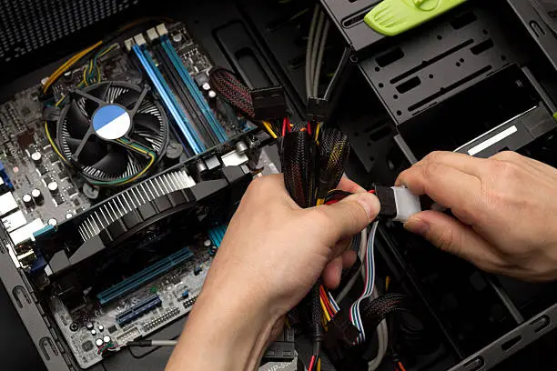

Services
Web Design
I craft websites that are both beautiful and highly functional. For data-driven websites, I integrate MySQL to ensure seamless, scalable storage and retrieval of information. Whether you're looking to build a personal portfolio, a business website, or an interactive platform, I bring together these core technologies to deliver a fast, responsive, and secure site tailored to your needs.

Computer Maintenance and Repair
In my role as an IT Support Specialist, I offer a comprehensive range of services designed to keep your technology running smoothly and securely. My expertise includes troubleshooting and resolving hardware and software issues, network support, and system maintenance to ensure maximum uptime.
Networking
With hands-on experience in configuring LANs, WANs, and cloud-based networks, I demonstrate a strong command of network protocols, routing, switching, and security measures. I have successfully implemented network infrastructures that prioritize reliability, scalability, and performance, ensuring seamless connectivity for businesses and users.